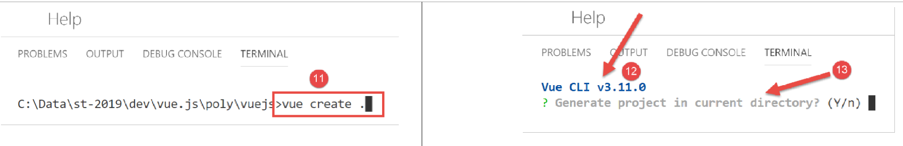
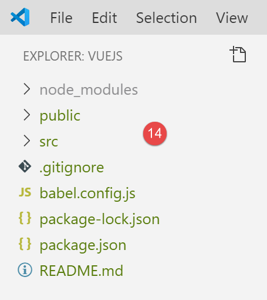
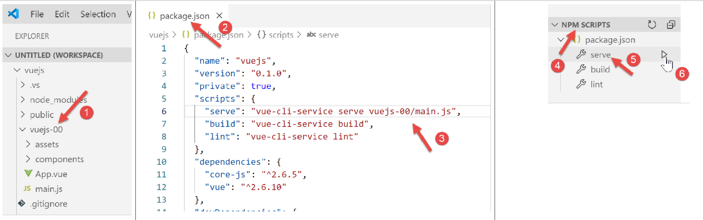

2. Einrichten einer Entwicklungsumgebung
Wir verwenden die in Dokument [2] beschriebene Entwicklungsumgebung:
- Visual Studio Code (VSCode) zum Schreiben von JavaScript-Code;
- [node.js] zum Ausführen des Codes;
- [npm] zum Herunterladen und Installieren der benötigten JavaScript-Bibliotheken;
Wir richten eine Arbeitsumgebung in [VSCode] ein:

- In [1-5] öffnen wir einen leeren [vuejs]-Ordner in [VSCode];

- In [8-10] installieren wir die Abhängigkeit [@vue/cli], mit der wir ein [Vue.js]-Projekt initialisieren können. Diese Abhängigkeit umfasst eine große Anzahl von Paketen (mehrere Hundert);
Im selben Terminal geben wir dann den Befehl [vue create .] ein, wodurch ein [Vue.js]-Projekt im aktuellen Verzeichnis (.) erstellt wird:

- In [13] beginnt eine Reihe von Fragen zur Konfiguration des Projekts;

- Sobald alle Fragen beantwortet sind, werden neue Pakete heruntergeladen und ein Projekt im aktuellen Verzeichnis erstellt [14].
Schauen wir uns einmal an, was generiert wurde. Die Datei [package.json] sieht wie folgt aus:
{
"name": "vuejs",
"version": "0.1.0",
"private": true,
"scripts": {
"serve": "vue-cli-service serve vuejs-20/main.js",
"build": "vue-cli-service build vuejs-20/main.js",
"lint": "vue-cli-service lint"
},
"dependencies": {
"axios": "^0.19.0",
"bootstrap": "^4.3.1",
"bootstrap-vue": "^2.0.2",
"core-js": "^2.6.5",
"vue": "^2.6.10",
"vue-router": "^3.1.3",
"vuex": "^3.1.1"
},
"devDependencies": {
"@vue/cli-plugin-babel": "^3.11.0",
"@vue/cli-plugin-eslint": "^3.11.0",
"@vue/cli-service": "^3.11.0",
"babel-eslint": "^10.0.1",
"eslint": "^5.16.0",
"eslint-plugin-vue": "^5.0.0",
"vue-template-compiler": "^2.6.10"
},
"eslintConfig": {
"root": true,
"env": {
"node": true
},
"extends": [
"plugin:vue/essential",
"eslint:recommended"
],
"rules": {},
"parserOptions": {
"parser": "babel-eslint"
}
},
"postcss": {
"plugins": {
"autoprefixer": {}
}
},
"browserslist": [
"> 1%",
"last 2 versions"
]
}
Kommentare
- Zeilen 14–22: Unter den für die Entwicklung erforderlichen Abhängigkeiten finden sich Verweise auf die beiden Tools [eslint, babel], die bereits in den beiden vorangegangenen Kapiteln verwendet wurden. Hinzu kommen Plugins für diese beiden Tools, die für die Verwendung innerhalb von [vue.js] vorgesehen sind;
- Zeile 34: Das Paket [babel-eslint] übernimmt die Transpilation des JavaScript-Codes von ES6 nach ES5;
- Zeilen 5–9: Es wurden drei [npm]-Aufgaben erstellt:
- [build]: dient zum Erstellen der kompilierten Version des Projekts, die für die Produktion bereit ist;
- [serve]: führt das Projekt auf einem Webserver aus. Dieses Tool wird verwendet, um während der Entwicklung Tests durchzuführen. Wie bei [webpack-dev-server] löst eine Änderung des Quellcodes des Projekts automatisch die Neukompilierung und das Neuladen des Projekts durch den Webserver aus;
- [lint]: dient zur Analyse von JavaScript-Code und zur Erstellung von Berichten. Dieses Tool werden wir hier nicht verwenden;
Es wurde eine [README.md]-Datei mit folgendem Inhalt generiert:
# vuejs
## Project setup
```
npm install
```
### Compiles and hot-reloads for development
```
npm run serve
```
### Compiles and minifies for production
```
npm run build
```
### Run your tests
```
npm run test
```
### Lints and fixes files
```
npm run lint
```
### Customize configuration
See [Configuration Reference](https://cli.vuejs.org/config/).
Diese Datei fasst die Befehle zusammen, die zur Verwaltung des Projekts verwendet werden.
Wir wissen, dass in [VSCode] [npm]-Aufgaben zur Ausführung verfügbar sind:

- In [1-3] führen wir den Befehl [serve] aus, der das Projekt kompiliert und anschließend ausführt [4-5];
Unter der URL [http://localhost:8080] wird die folgende Seite angezeigt:

Wir werden etwas später erklären, wie es zu dieser Seite gekommen ist.
Fahren wir mit der Einrichtung unserer Arbeitsumgebung fort:

- In [2] oben sehen wir [git]-Symbole. [git] ist ein Versionskontrollsystem für Quellcode, mit dem Sie aufeinanderfolgende Versionen des Codes verwalten und unter Entwicklern austauschen können. Wir werden dieses Tool für das Projekt deaktivieren;
- In [3-5] rufen wir die Projekteigenschaften auf;

- In [9-10] deaktivieren wir die Verwendung von [git] im Projekt;
Wir werden verschiedene Tests schreiben, um zu demonstrieren, wie [vue.js] funktioniert. Wir möchten jedoch nicht jedes Mal ein neues Projekt erstellen, da dies jedes Mal die Generierung eines [node_modules]-Ordners erfordern würde, und dieser Ordner mehrere hundert Megabyte groß ist. Schauen wir uns noch einmal die [npm]-Aufgaben in der Datei [package.json] an:
"scripts": {
"serve": "vue-cli-service serve vuejs-00/main.js",
"build": "vue-cli-service build vuejs-00/main.js",
"lint": "vue-cli-service lint"
},
- Zeile 2: Der Befehl [serve] verwendet standardmäßig:
- die Datei [public/index.html];
- die mit der Datei [src/main.js] verknüpft ist;
In Zeile 2 können Sie den Einstiegspunkt des Projekts für den Befehl [serve] angeben, zum Beispiel:
"serve": "vue-cli-service serve vuejs-00/main.js",
Probieren wir es aus:

- In [1] wurde der Ordner [src] in [vuejs-00] umbenannt;
- In [2-3] wurde der Befehl [serve] geändert;
- In [4-6] führen wir das Projekt aus;
Wir erhalten das gleiche Ergebnis wie zuvor:

Für unsere Tests gehen wir wie folgt vor:
- Wir schreiben Code in einen Ordner [vuejs-xx] innerhalb des Projekts;
- Testen dieses Projekts mit dem Befehl [vue-cli-service serve vuejs-xx/main.js] in der Datei [package.json];
Wenn der Entwicklungsserver läuft, löst jede Änderung an einer der Projektdateien eine Neukompilierung aus. Aus diesem Grund deaktivieren wir den Modus [Auto Save] in [VSCode]. Schließlich möchten wir nicht, dass jedes Mal eine Neukompilierung erfolgt, wenn wir Zeichen in eine der Projektdateien eingeben. Eine Neukompilierung soll nur zu bestimmten Zeitpunkten erfolgen:

- In [2] darf die Option [Auto Save] nicht aktiviert sein;